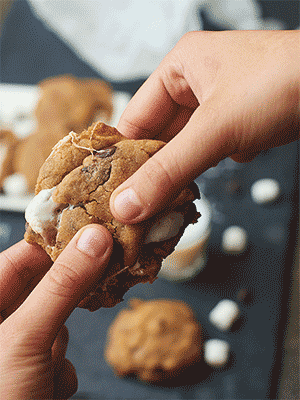

Peanut butter cookies

Description of the recipe
My wife's special recipe makes the peanut butteriest tasting cookie I have ever tasted. These soft and chewy peanut buttery cookies are the best!
Ingredients
- 1 cup peanut butter
- 1/2 cup butter, softened
- 1/2 cup white sugar
- 1/2 cup packed brown sugar
- 1 egg
- 3 tablespoons milk
- 1 teaspoon vanilla extract
- 1 1/4 cups all-purpose flour
- 3/4 teaspoon baking powder
- 1/4 teaspoon salt
Steps
Now let's make it
- Preheat the oven to 375 degrees F (190 degrees C).
- In a large bowl, cream together the peanut butter, butter, white sugar, and brown sugar until well blended. Beat in the egg, milk, and vanilla one at a time. Combine the flour, baking powder, and salt; stir into creamed mixture. Roll tablespoonfuls of dough into balls. Place cookies 2 inches apart onto ungreased cookie sheets. Press each ball once with fork tines.
- Bake for 8 to 10 minutes in the preheated oven, or until edges are lightly browned.